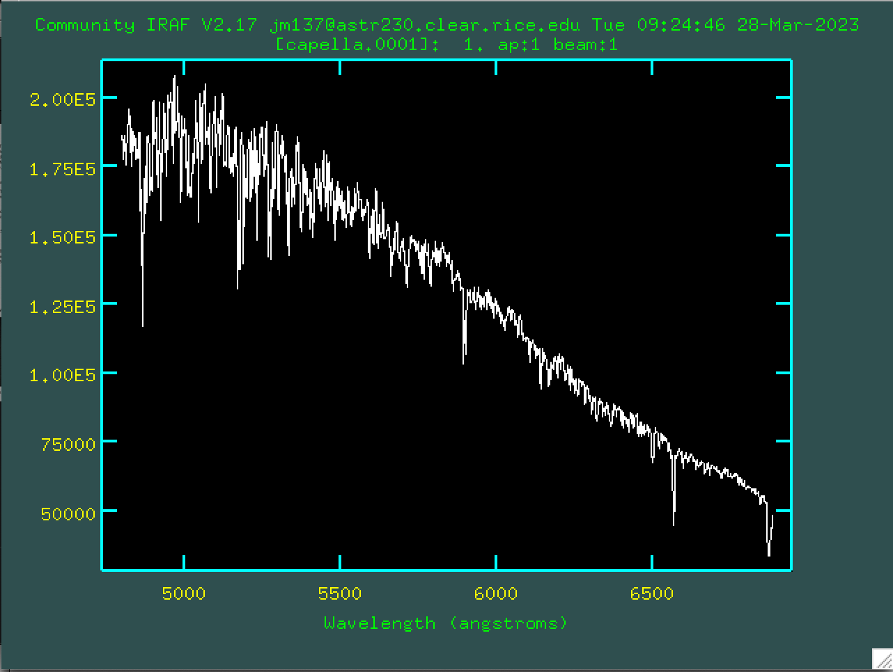
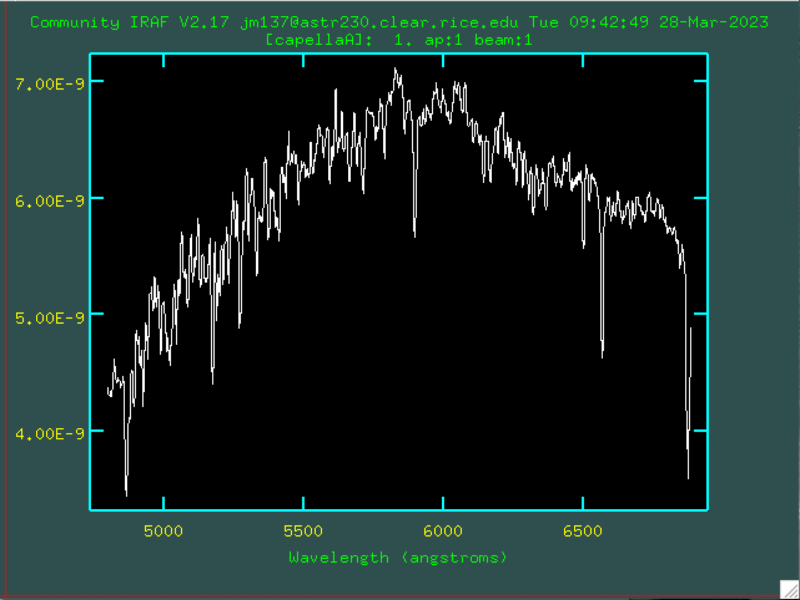

Mapping Molecular Clouds Near M17
In July 2018, I attended a two-week program at the Pisgah Astronomical Research Institute where I completed a final project on mapping molecular clouds near Messier 17 with two other students. We collected our own data using an optical telescope and a 12-meter radio telescope that were on site. At the end of the two-week program, we had to present a poster and a powerpoint presentation to our peers and the faculty at PARI.
Categorizing NGC4438 Using Color Gradients
During Spring semester 2023, I had to create my own research project idea, collect my data virtually using McDonald Observatory's .8 m telescope, and reduce and analyze the data using IRAF, Jupyter Notebook, and DS9 for my astronomy lab class at Rice University. My project was focused on categorizing NGC4438 using color gradients. At the end of the semester, we had to present our findings to our peers and the Physics and Astronomy faculty at Rice University.
Short Spectroscopic Project: Spectra of Capella
During Spring semester 2023, I had to take a spectra of a bright object of my choosing using Rice University's telescope and reduced it using IRAF.
 Localizing Stellar Activity on Low-Mass Stars with the Transiting Exoplanet Survey Satellite
During the summer in 2023, I was an intern at Goddard Space Flight Center in code 667. My project was on localizing stellar activity on low-mass stars using TESS 120s SPOC calibrated data. I spent 10 weeks creating and cleaning my sample of light curves using Lightkurve, and localizing flares using AltaiPony. My clean sample consisted of K and M stars for five nearby moving groups--Beta Pictoris, AB Doradus, Tucana-Horologium, Columba, and Carina. Some of the stars in my sample have been observed by TESS over multiple sectors so each sector of data was treated individually, creating a total of 199 light curves. At the end of the internship, I presented a short presentation to my fellow interns and mentors and created a poster which will hopefully be presented at a conference in the future. I will be continuing my research during the Fall semester (2023).